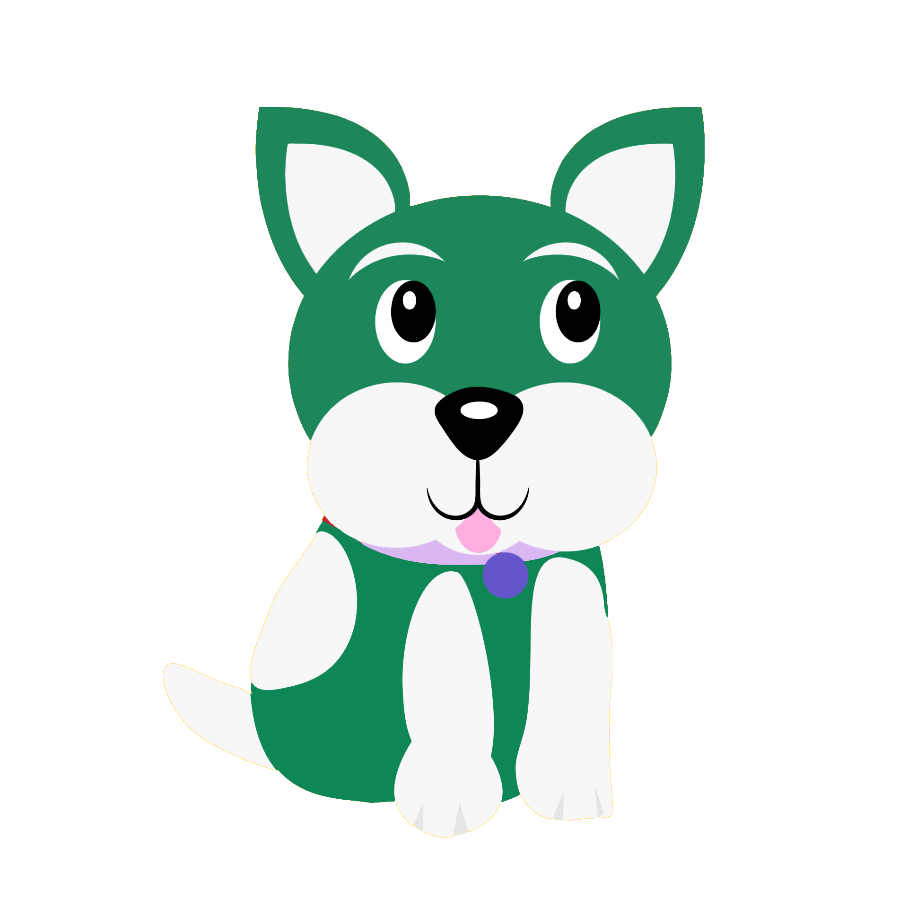

The Duck of Truth is a very well-respected duck who knows the truth about almost everything. People come to the Duck of Truth in his pond to discover the truth.
Pupster the Puppy came to visit the Duck of Truth and asked, “Who am I? What is my purpose?” The Duck of Truth smiled at Pupster and answered honestly, “I do not know, Pupster, as the answers that you seek are inside of you! Who we are is up to us as we shape our own futures quack!” Pupster said, “Thank you Duck of Truth! See you later!” Pupster left as the Duck of Truth continued to help the world by telling the truth.